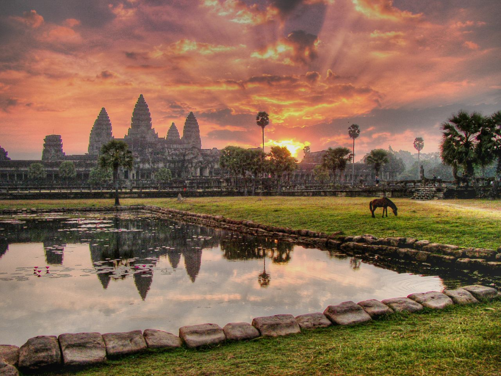

ការពិពណ៏នាអំពី ខេត្តនីមួយៗនៅក្នងប្រទេសកម្ពុជា
ទំព័រដើម
តាកែវ
ភ្នំពេញ
កែប
ព្រះសីហនុ
ស្វាយរៀង
កំពង់ធំ
បាត់ដំបង
ពោធ៏សាត់
សៀមរាប
រតនគីរី
មណ្ឌលគីរី
ក្រចេះ
ត្បូងឃ្មុំ
កំពង់ចាម
ព្រៃវែង
កណ្តាល
ឧត្តរមានជ័យ
កំពង់ឆ្នាំង
កំពង់ស្ពឺ
បន្ទាយមានជ័យ
កោះកុង
ប៉ៃលិន
កំពត
ស្ទឹងត្រែង
ព្រះវិហារ
ទំនាក់ទំនង
ខេត្តសៀមរាប

ព័ត៌មានសង្ខេបអំពីខេត្តសៀមរាប
> ខេត្តសៀមរាប គឺជាខេត្តមួយដែលមានទីតាំងស្ថិតនៅភាគពាយ័ព្យនៃប្រទេសកម្ពុជានិងនៅក្បែរបឹងទន្លេសាប។ទីរួមខេត្តរបស់ខេត្តសៀមរាបគឺក្រុងសៀមរាបនិងក្រុងរុនតាឯក។ខេត្តសៀមរាបត្រូវបានដាក់ឈ្មោះបែបនេះគឺដើម្បីរំលឹកដល់ជ័យជម្នះរបស់កងទ័ពខ្មែរវាយឈ្នះលើកងទ័ពសៀមនៅសម័យលង្វែកក្នុងសតវត្សរ៍ទី ១៦។សព្វថ្ងៃខេត្តសៀមរាបត្រូវបានគេស្គាល់ទូទាំងពិភពលោកថាជាទីតាំងនៃប្រាសាទអង្គរវត្តដ៏ល្បីល្បាញ។ខេត្តនេះជាតំបន់ទេសចរណ៍ដ៍សំខាន់របស់ប្រទេសកម្ពុជាដោយសារខេត្តនេះមានប្រាសាទអង្គរវត្តដ៏ល្បីល្បាញនិងប្រាសាទបុរាណដទៃទៀតជាច្រើន។ថ្មីៗនេះក្រុងសៀមរាបកំពុងប្រែក្លាយរូបរាងទៅជាក្រុងទំនើបតាមរយៈកំណើនសណ្ឋាគារ ភោជនីយដ្ឋាន ហាងលក់ទំនិញ ជាដើមដែលបម្រើឲ្យវិស័យទេសចរណ៍។រមណីយដ្ឋានបុរាណផ្សេងៗទៀតដែលស្ថិតនៅក្នុងក្រុងនិងក្រៅក្រុងនៃខេត្តសៀមរាបមានប្រាសាទអង្គរវត្ត ប្រាសាទបាយ័ន ប្រាសាទភ្នំបាខែង ប្រាសាទបក្សីចាំក្រុង ប្រាសាទបាពួន ប្រាសាទភិមានអាកាស ប្រាសាទបន្ទាយស្រី ប្រាសាទតាព្រហ្ម ប្រាសាទព្រះខ័ន ប្រាសាទព្រះបាលិលេយ្យ ប្រាសាទតានៃ ប្រាសាទតាសោម ប្រាសាទតាកែវ ប្រាសាទធម្មនន្ទ ប្រាសាទព្រះគោ ប្រាសាទព្រះពិធូរ ប្រាសាទនាគព័ន្ធ ប្រាសាទសួព្រ័ត្រ ប្រាសាទបី ប្រាសាទព្រហ្មកិល ប្រាសាទរោងល្មុង ប្រាសាទតុប ប្រាសាទក្រវ៉ាន់ ប្រាសាទថ្មបាយក្អែក ប្រាសាទបន្ទាយសំរែ ប្រាសាទបន្ទាយក្តី ប្រាសាទក្រោលគោ ប្រាសាទភ្នំក្រោម ប្រាសាទភ្នំបូក ប្រាសាទបាគង ប្រាសាទបេងមាលា ប្រាសាទលលៃ ប្រាសាទមេបុណ្យខាងលិច ប្រាសាទមេបុណ្យខាងកើត ប្រាសាទទេពប្រណម្យ ប្រាសាទទទឹងថ្ងៃ ប្រាសាទព្រៃមន្ទីរ ប្រាសាទព្រៃក្មេង ប្រាសាទបាតជុំ ប្រាសាទគោកត្រាង ប្រាសាទត្រពាំងផុង ប្រាសាទបន្ទាយធំ ប្រាសាទលាក់នាង ប្រាសាទចៅសាយទេវតា ប្រាសាទប្រែរូប លានស្តេចគំលង់ លានជល់ដំរី ប្រាសាទអកយំ ប្រាសាទគោគពោធិ៍ ប្រាសាទគោកគ្រញូង ប្រាសាទចៅស្រីវិបុលកេរ្តិ៍ ប្រាសាទត្រពាំងខ្យង ប្រាសាទផ្ទី ប្រាសាទទន្លេស្ងួត ប្រាសាទបន្ទាយធំ ប្រាសាទព្រៃប្រាសាទ ប្រាសាទជ្រុងនិងប្រាសាទរាប់រយផ្សេងទៀត។
> ខេត្តសៀមរាប គឺជាខេត្តធំទី ១០ នៅក្នុងប្រទេសកម្ពុជា។ចំនួនប្រជាជននៅក្នុងខេត្តនេះកើនឡើងដល់ខ្ទង់លាននាក់ហើយជាប់ចំណាត់ថ្នាក់ជាខេត្តដែលមានប្រជាជនច្រើនជាងគេបំផុតនៅក្នុងព្រះរាជាណាចក្រកម្ពុជា។មួយផ្នែកធំនៃព្រំដែនភាគខាងត្បូងនៃខេត្តសៀមរាបជាប់នឹងបឹងទន្លេសាបដូច្នេះហើយបានជាខេត្តសៀមរាបគឺជាខេត្តមួយនៅក្នុងចំណោមខេត្តទាំង ០៩ ដែលបង្កើតបានជាតំបន់ទុនបម្រុងជីវមណ្ឌលទន្លេសាប។នាពេលបច្ចុប្បន្នខេត្តនេះត្រូវបានគេស្គាល់ថាជាទីតាំងនៃប្រាសាទអង្គរវត្តដែលជាតំបន់បេតិកភណ្ឌពិភពលោករបស់អង្គការយូណេស្កូនិងជាអច្ឆរិយវត្ថុរបស់ពិភពលោកផងដែរ។ហើយក៏ជាទីតាំងប្រាសាទល្បាញល្បីៗជាច្រើនទៀតក្រៅពីប្រាសាទអង្គរវត្តដូចជាប្រាសាទបន្ទាយស្រី ប្រាសាទបេងមាលា ប្រាសាទបាគង ប្រាសាទបាយ័ន ប្រាសាទព្រះខ័ន ប្រាសាទបន្ទាយធំ ប្រាសាទតាព្រហ្មនិងប្រាសាទនានាផ្សេងទៀតដែលជាសម្បត្តិបេតិកភណ្ឌរបស់អង្គការយូណេស្កូផងដែរ។ឧទ្យានជាតិភ្នំគូលែនគឺជារមណីយដ្ឋានប្រវត្តិសាស្ត្រនិងធម្មជាតិល្បីល្បាញមួយដែលជាទីពេញនិយមសម្រាប់ភ្ញៀវទេសចរជាតិនិងអន្តរជាតិទៅទស្សនាកម្សាន្តមិនអាចរំលងបាន។
> ខេត្តសៀមរាប មានស្រុកចំនួន ១២ ស្រុក :
- ស្រុកសៀមរាប
- ស្រុកសង្កែ
- ស្រុកជាំព្រីង
- ស្រុកបាល់ទាយ
- ស្រុកពួក
- ស្រុកបាណន់
- ស្រុកស្រែអន្លង់
- ស្រុកព្រះស្តេច
- ស្រុកបាទី
- ស្រុកកណ្ដាល
- ស្រុកស្រែសំឡេង
- ស្រុកស្វាយដង្គំ